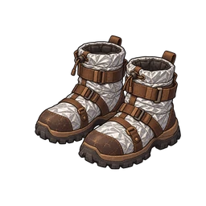

B. térm.
SR Piernas
Botas gruesas con tela aislante. Resisten el fuego.
Descripción general
| Parte | Piernas |
|---|---|
| Raridad | SR |
| HP en Lv1 | 25 |
| HP plano por nivel | 1 |
| HP tasa de crecimiento | x1.04 |
| Gacha | Gacha paga: Desde la etapa 101 (Banner 9, Banner 10) |
Habilidades
- Daño recibido -10%
- Inmune a quemando
HP por nivel
HP en el nivel L = redondo(HP base x crecimiento^(L-1)) + piso(plano por nivel x (L-1))
| Lv | HP |
|---|---|
| Lv1 | 25 |
| Lv10 | 45 |
| Lv20 | 72 |
| Lv30 | 107 |
| Lv50 | 220 |
| Lv99 | 1265 |
El límite de nivel comienza en 20; cada duplicado lo aumenta en 10, hasta 99.